YUMMY
FOODS
Welcome to Yummy Foods
Yummy foods are enjoyed by people of all ages because of their rich taste, pleasant aroma, and attractive presentation. Different varieties of food represent the culture and traditions of different regions. Delicious food not only satisfies hunger but also brings happiness and creates memorable experiences during celebrations and gatherings.

|
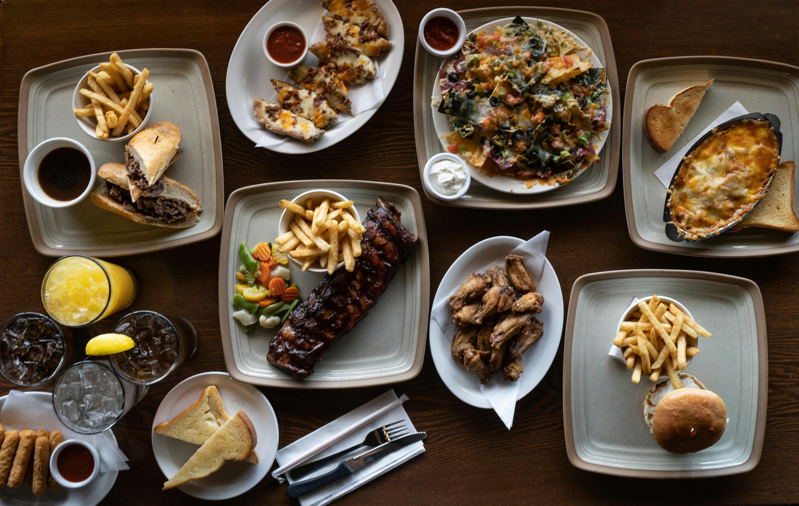
|
Food is also an important part of a healthy and enjoyable lifestyle. Nutritious and tasty meals provide energy to the body and help maintain good health. Therefore, yummy foods play a vital role in improving both physical well-being and social bonding among people.
Burgers Collection
Burger is one of the most popular fast foods enjoyed around the world. It is prepared using soft buns filled with patties, fresh vegetables, cheese, and flavorful sauces. Burgers are loved for their delicious taste, attractive appearance, and variety of flavors

|
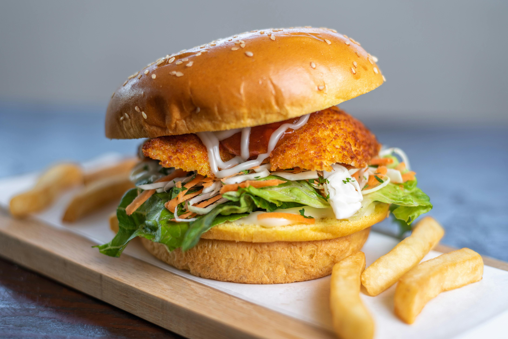
|
|

|
| Burger one |
Burger Two |
Burger Three |
Burger Four |
Different types of burgers are available, including veg burgers, chicken burgers, and cheeseburgers. They are commonly served in restaurants, cafés, and fast-food outlets. Burgers have become a favorite choice for snacks, parties, and casual meals among people of all ages.
chicken staters
p>Chicken starter are popular appetizer dishes known for their spicy flavor, crispy texture, and delicious taste. They are prepared using fresh chicken combined with various spices, herbs, and sauces to create mouthwatering recipes. Chicken starters are commonly served at restaurants, parties, and family gatherings as an attractive beginning to a meal
|
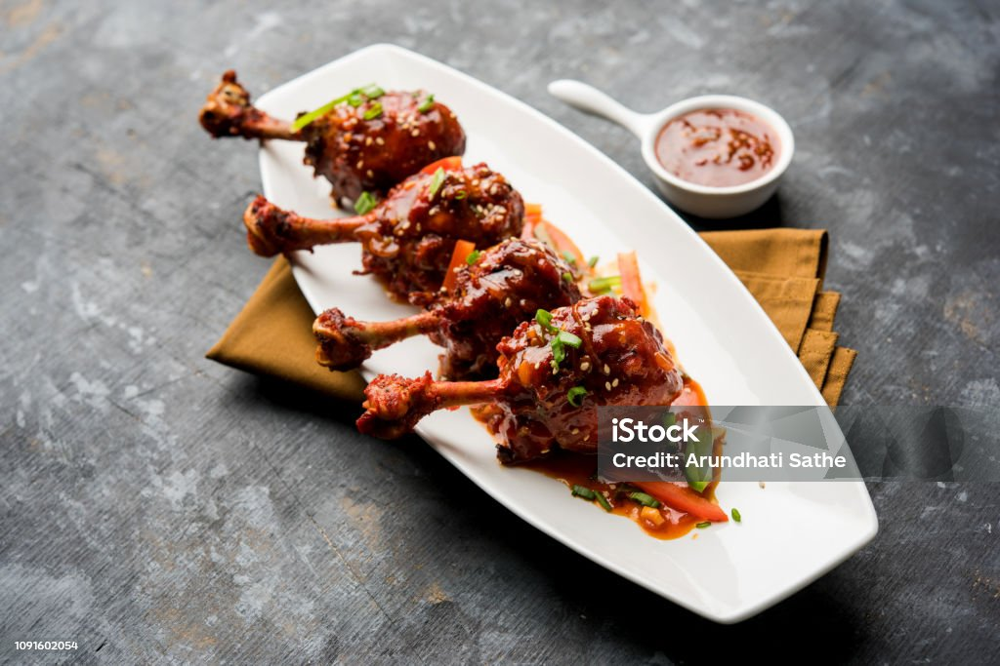
|
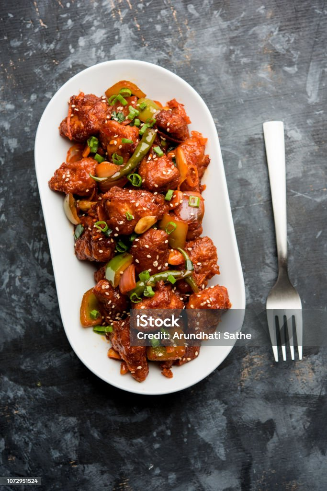
|
|
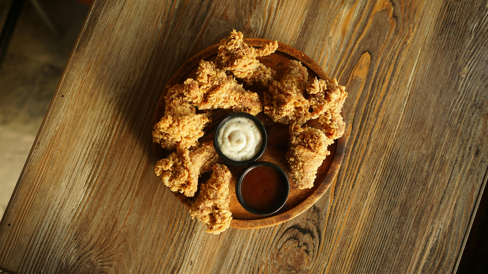
|
| stater one |
stater Two |
stater Three |
stater Four |
Different varieties of chicken starters include crispy chicken, grilled chicken, spicy wings, and fried chicken bites. These dishes are enjoyed by people of all ages because of their rich flavor and appealing presentation. Chicken starters have become an important part of modern food culture and are widely loved by food enthusiasts.
Eat Healthy and Stay Healthy
Egg are considered one of the healthiest and most nutritious foods. They are rich in protein, vitamins, and essential minerals that help in maintaining good health and body strength. Eating eggs regularly can support muscle growth, improve energy levels, and contribute to a balanced diet
|
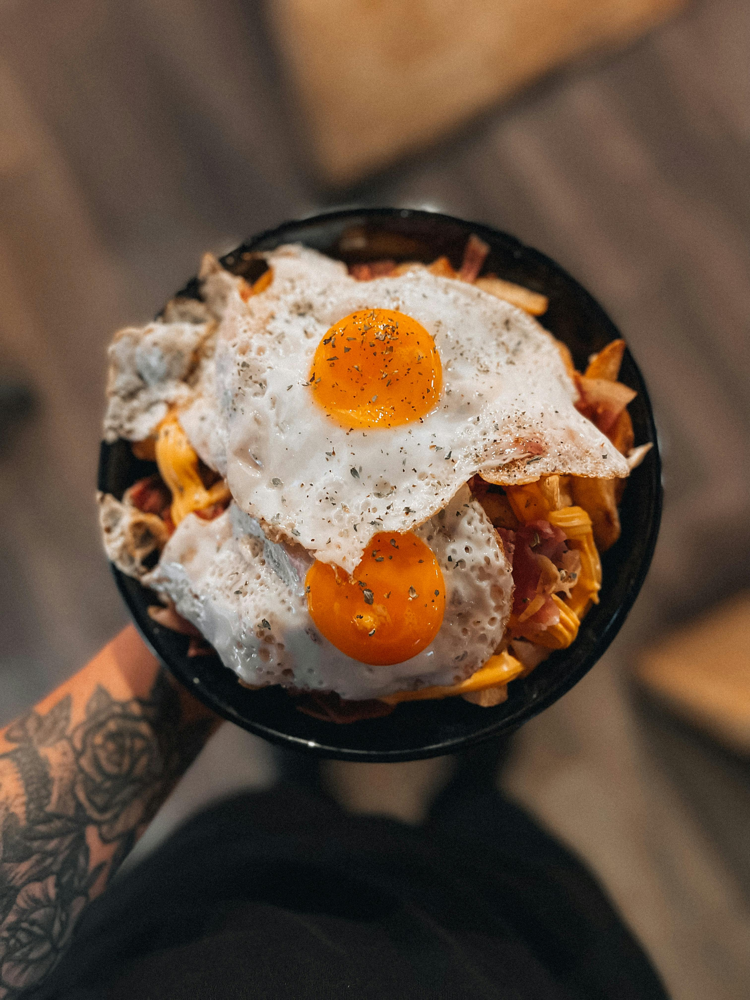
|
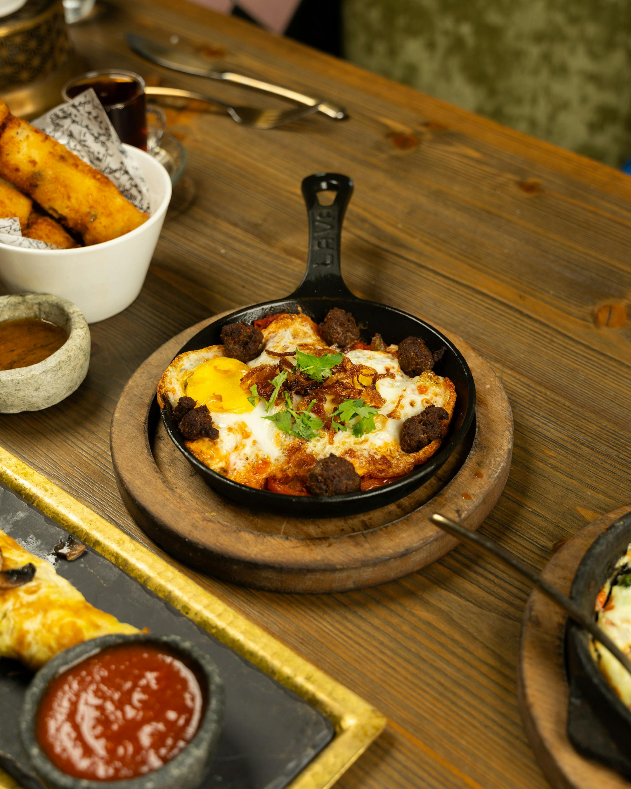
|
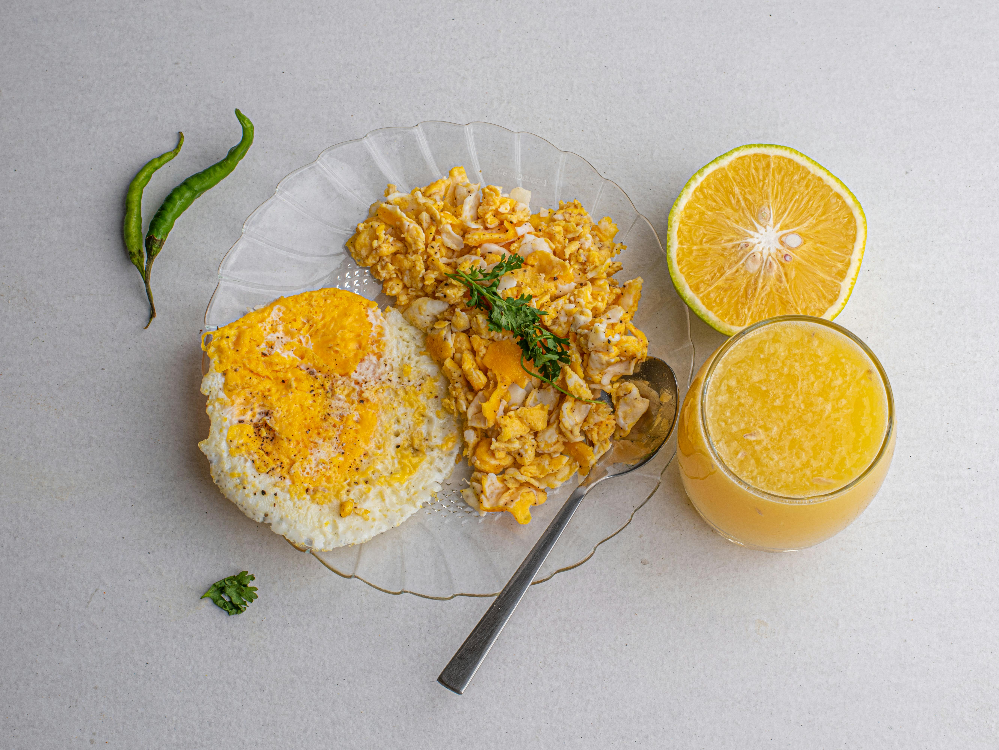
|

|
| Healthy one |
Healthy Two |
Healthy Three |
Healthy Four |
Healthy egg dishes such as boiled eggs, omelets, and egg salads are simple, tasty, and beneficial for people of all ages. Eggs are widely included in daily meals because they are both nutritious and easy to prepare. Therefore, eggs play an important role in promoting a healthy lifestyle and proper nutrition
Do Google and Eat Noodles
Noodles are one of the most popular and delicious foods enjoyed by people around the world. They are prepared using different ingredients, vegetables, sauces, and spices, which give them a rich taste and attractive appearance. Noodles are easy to prepare and are commonly served as a quick meal or snack
|
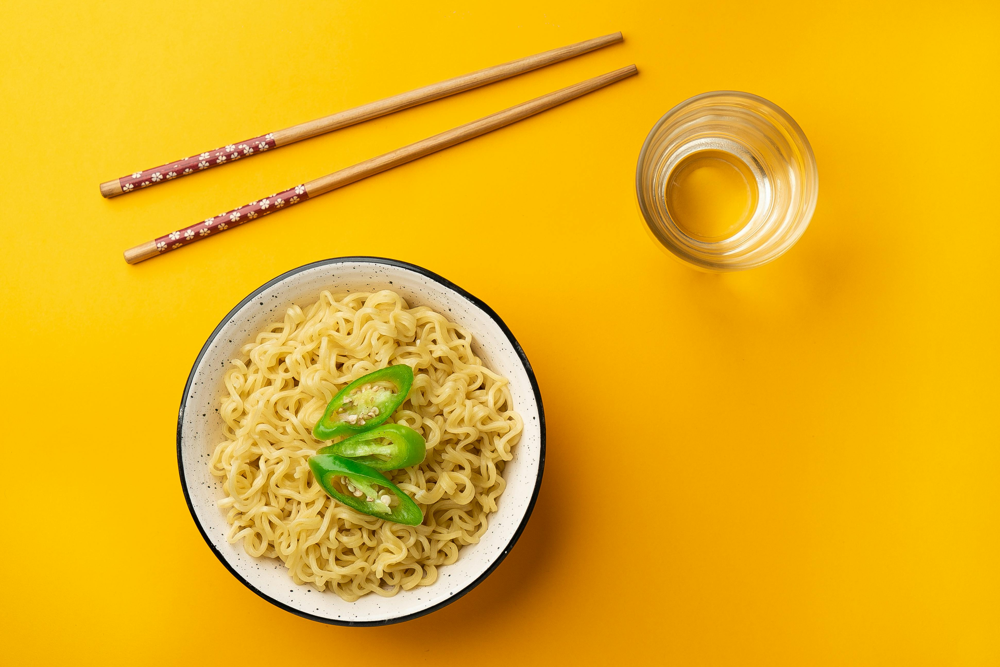
|

|

|
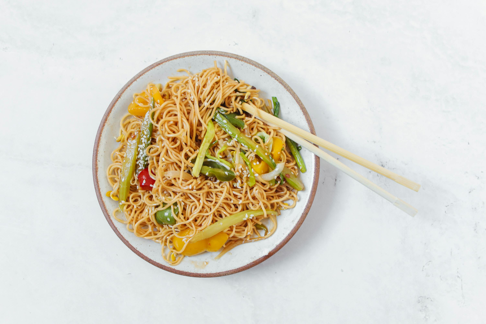
|
| Noodle one |
Noodle Two |
Noodle Three |
Noodle Four |
Different varieties of noodles, such as vegetable noodles, chicken noodles, and spicy noodles, offer unique flavors and styles. They are widely available in restaurants, cafés, and street food stalls. Due to their tasty flavor and convenience, noodles have become a favorite food choice among people of all ages.Different varieties of noodles, such as vegetable noodles, chicken noodles, and spicy noodles, offer unique flavors and styles. They are widely available in restaurants, cafés, and street food stalls. Due to their tasty flavor and convenience, noodles have become a favorite food choice among people of all ages.
Enjoy the deserts
Dessert are sweet dishes usually served after meals to provide a pleasant and satisfying ending. They are prepared using ingredients such as milk, chocolate, fruits, sugar, and cream, creating rich flavors and attractive presentations. Desserts are loved by people of all ages because of their delicious taste and variety
|
|
|
|
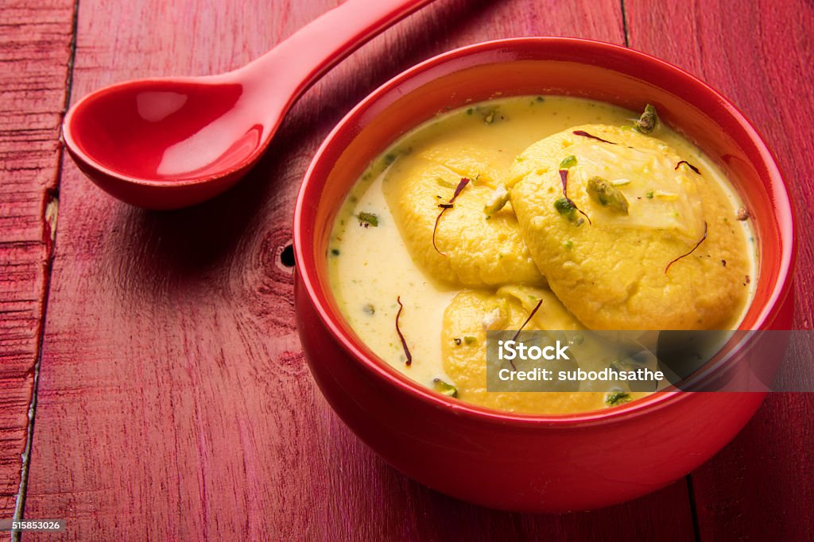
|
| Desert one |
Desert Two |
Desert Three |
Desert Four |
Different types of desserts include cakes, ice creams, pastries, puddings, and sweets. These dishes are commonly enjoyed during celebrations, festivals, and special occasions. Desserts not only add sweetness to meals but also bring joy and enjoyment to people
Copyright © 2026 Yummy Foods
All Rights Reserved
"Taste the happiness in every bite and enjoy the flavor of perfection."
Developed By Maneesha Talari